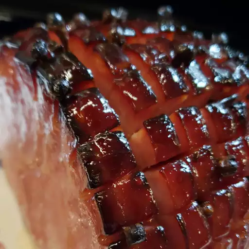

Honey Glazed Ham

Ingredients
1 (5 pound) ready-to-eat ham
Steps
Step 1.
Preheat oven to 325 degrees F (165 degrees C).
Step 2. Score ham, and stud with the whole cloves. Place ham in foil lined pan.
Step 3. In the top half of a double boiler, heat the corn syrup, honey and butter. Keep glaze warm while baking ham.
Step 4. Brush glaze over ham, and bake for 1 hour and 15 minutes in the preheated oven. Baste ham every 10 to 15 minutes with the honey glaze. During the last 4 to 5 minutes of baking, turn on broiler to caramelize the glaze. Remove from oven, and let sit a few minutes before serving.